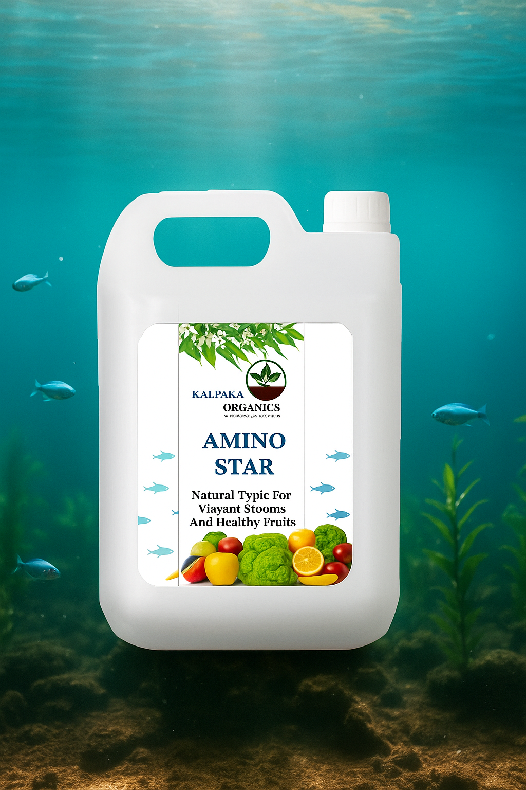

About Amino Star (மீன் அமிலம்)

Key Features & Benefits:
Composition:
Ideal For:
- Organic Farming
- Vegetable and fruit crops
- Flowering plants
- Greenhouses and Terrace Gardens
Application Guidelines for Amino Star
-
Dilution:
-
Mix 2-4 ml of Amino Star per 1 litre of water
-
Method of Application:
-
Foliar Spray: - Spray directly on leaves during early morning or late eveningSoil Drench / Drip Irrigation: - Apply near the root zone or through drip systems
-
Frequency:
-
Apply once every 7 to 10 days during the vegetative and flowering stages for best results
-
Suitable For:
-
Vegetables, fruits, pulses, flowers, grains, and ornamental plants
-
Note:
-
Avoid spraying during peak sunlight hoursStore in a cool, dry place away from direct sunlight
Packaging Available
Available in: 500 ml | 1 L | 5 L bottles and cans.